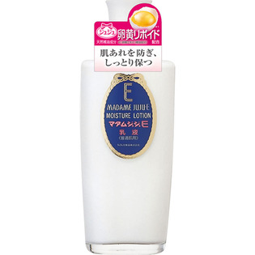

返回列表
产品名称：マダムジュジュE 乳液

ジュジュ化粧品 マダムジュジュE 乳液 １５０ｍｌ
メーカー ジュジュ化粧品
JANコード 4901727004011
商品の特徴
＜普通肌用 ＞
- 成分・分量
- ＜全成分 ＞
水 ミネラルオイル ステアリン酸 PG ステアレス-3 スクワラン ミリスチン酸イソプロピル ラノリン TEA メチルパラベン 香料 ステアリルアルコール ブチルパラベン 酢酸トコフェロール 変性アルコール イソプロパノール BHT 卵黄エキス トコフェロール
- 用法及び用量
- 化粧水でお肌を整えたあと 適量を手のひらにとり お肌になじませてください